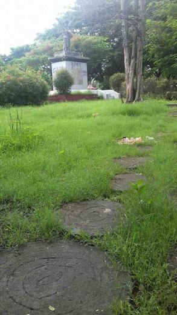

<!DOCTYPE html>
<html>
<head>
	<title>Lombok Tengah Gis</title>
	<meta charset="utf-8">
	<link rel="stylesheet" type="text/css" href="asset/leaflet/leaflet.css">
	<script src="asset/leaflet/leaflet.js"></script>
	<script src="json/kecpraya.js"></script>
	<style>
		html, body {
			height: 100%;
			width: 100%;
			margin:0;
			padding: 0;
		}
		#map {
			width: 100%;
			height:100%;
		}
		.leaflet-popup-content {
			width:auto !important;
		}

	</style>
</head>
<body>
<div id="map"></div>
<script>

	//##############################################//
	// Membuat Icon Pada Peta 
	//##############################################//
	var mapIcon = L.Icon.extend({
	    iconSize:     [32, 37]
	});
	var masjidIcon = new mapIcon({iconUrl: 'icon/mosquee.png'}),
	    pasarIcon = new mapIcon({iconUrl: 'icon/market.png'}),
	    sekolahIcon = new mapIcon({iconUrl: 'icon/school.png'});
	    bendunganIcon = new mapIcon({iconUrl: 'icon/dam.png'});
	    kecamatanIcon = new mapIcon({iconUrl: 'icon/ticket_office2.png'});
	    tamanIcon = new mapIcon({iconUrl: 'icon/beergarden.png'});
	    rsudIcon = new mapIcon({iconUrl: 'icon/hospital-building.png'});
	    puskesmasIcon = new mapIcon({iconUrl: 'icon/hospital-building.png'});	   
	    lapanganIcon = new mapIcon({iconUrl: 'icon/field.png'});
	    bupatilomboktengahIcon = new mapIcon({iconUrl: 'icon/office-building.png'});
	    polreslotengIcon = new mapIcon({iconUrl: 'icon/police.png'});


	//##############################################//
	// Mendeklarasikan Marker polres lombok tengah dan membuatnya menjadi 
	// Layer Group
	//##############################################//
	
	var polresloteng1 = L.marker([-8.7061917, 116.2691035],{icon: polreslotengIcon}).bindPopup("Polres Lombok Tengah ");
	
	var polresloteng = L.layerGroup([polresloteng1]);


	//##############################################//
	// Mendeklarasikan Marker kantor bupati lombok tengah dan membuatnya menjadi 
	// Layer Group
	//##############################################//
	
	var bupatilomboktengah1 = L.marker([-8.7061917, 116.2691035],{icon: bupatilomboktengahIcon}).bindPopup("Kantor Bupati Lombok Tengah ");
	
	var bupatilomboktengah = L.layerGroup([bupatilomboktengah1]);


    //##############################################//
	// Mendeklarasikan Marker lapangan dan membuatnya menjadi 
	// Layer Group
	//##############################################//
	
	var lapangan1 = L.marker([-8.7045539, 116.2712998],{icon: lapanganIcon}).bindPopup("Lapangan Muhajirin ");
	
	var lapangan = L.layerGroup([lapangan1]);
   
   

    //##############################################//
	// Mendeklarasikan Marker puskesmas dan membuatnya menjadi 
	// Layer Group
	//##############################################//
	
	var puskesmas1 = L.marker([-8.7060444, 116.2726082],{icon: puskesmasIcon}).bindPopup("Puskesmas Praya ");
	
	var puskesmas = L.layerGroup([puskesmas1]);


	//##############################################//
	// Mendeklarasikan Marker rsud dan membuatnya menjadi 
	// Layer Group
	//##############################################//
	
	var rsud1 = L.marker([-8.7019832, 116.2958626],{icon: rsudIcon}).bindPopup("RSUD Praya ");
	
	var rsud = L.layerGroup([rsud1]);


	//##############################################//
	// Mendeklarasikan Marker taman dan membuatnya menjadi 
	// Layer Group
	//##############################################//
	
	var tmn1 = L.marker([-8.7139106, 116.2869397],{icon: tamanIcon}).bindPopup("Taman Biao ");
	var tmn2 = L.marker([-8.7141343, 116.2639882],{icon: tamanIcon}).bindPopup("Tonjeng Beru Semart Garden ");

	
	var taman = L.layerGroup([tmn1, tmn2]);


	
    //##############################################//
	// Mendeklarasikan Marker kecamayan dan membuatnya menjadi 
	// Layer Group
	//##############################################//
	
	var kc1 = L.marker([-8.6128812, 116.3103311],{icon: kecamatanIcon}).bindPopup("Kantor Camat Batukeliang ");
	var kc2 = L.marker([-8.588949, 116.3245473],{icon: kecamatanIcon}).bindPopup("Kantor Camat Batukeliang Utara ");
	var kc3 = L.marker([-8.6942821, 116.3995881],{icon: kecamatanIcon}).bindPopup("Kantor Camat Janapria ");
    var kc4 = L.marker([-8.6525193, 116.1979991],{icon: kecamatanIcon}).bindPopup("Kantor Camat Jonggat ");
    var kc5 = L.marker([-8.6343426, 116.3548378],{icon: kecamatanIcon}).bindPopup("Kantor Camat Kopang ");
    var kc6 = L.marker([-8.7237617, 116.2390471],{icon: kecamatanIcon}).bindPopup("Kantor Camat Praya ");
	var kc7 = L.marker([-8.742301, 116.2410837],{icon: kecamatanIcon}).bindPopup("Kantor Camat Praya Barat ");
	var kc8 = L.marker([-8.7385415, 116.2015728],{icon: kecamatanIcon}).bindPopup("Kantor Camat Praya Barat Daya ");
	var kc9 = L.marker([-8.7340447, 116.316331],{icon: kecamatanIcon}).bindPopup("Kantor Camat Praya Tengah ");
	var kc10 = L.marker([-8.7614541, 116.3561055],{icon: kecamatanIcon}).bindPopup("Kantor Camat Praya Timur ");
	var kc11 = L.marker([-8.6190565, 116.2517066],{icon: kecamatanIcon}).bindPopup("Kantor Camat Pringarata ");
	var kc12 = L.marker([-8.8004563, 116.292598],{icon: kecamatanIcon}).bindPopup("Kantor Camat Pujut ");
	var kecamatan = L.layerGroup([kc1, kc2, kc3, kc4, kc5, kc6, kc7, kc8, kc9, kc10, kc11, kc12]);


	//##############################################//
	// Mendeklarasikan Marker bendungan dan membuatnya menjadi 
	// Layer Group
	//##############################################//
	
	var bdg1 = L.marker([-8.7320897, 116.2726254],{icon: bendunganIcon}).bindPopup("Bendungan Batujai ");
	var bdg2 = L.marker([-8.7575494, 116.1880415],{icon: bendunganIcon}).bindPopup("Bendungan Pengge ");

	
	var bendungan = L.layerGroup([bdg1, bdg2]);


//var popupRenteng = "";


	//##############################################//
	// Membuat BaseMap Pada Peta
	//##############################################//

	var mbAttr = 'Map data &copy; <a href="https://www.openstreetmap.org/">OpenStreetMap</a> contributors, ' +
			'<a href="https://creativecommons.org/licenses/by-sa/2.0/">CC-BY-SA</a>, ' +
			'Imagery © <a href="https://www.mapbox.com/">Mapbox</a>',
		mbUrl = 'https://api.tiles.mapbox.com/v4/{id}/{z}/{x}/{y}.png?access_token=pk.eyJ1IjoibWFwYm94IiwiYSI6ImNpejY4NXVycTA2emYycXBndHRqcmZ3N3gifQ.rJcFIG214AriISLbB6B5aw';

	var streets  = L.tileLayer(mbUrl, {id: 'mapbox.streets',   attribution: mbAttr});

	//##############################################//
	// Mendeklarasikan Peta kedalam Id Map
	//##############################################//
	var map = L.map('map', {
		center: [-8.6416479, 116.3522657],
		zoom: 11,
		layers: [streets]
	});

	//##############################################//
	// Mendeklarasikan BaseLayer Pada Map yakni Street
	//##############################################//
	var baseLayers = {
		"Streets": streets
	};

	var kelpraya = L.geoJSON([kelpraya], {
		style: function (feature) {
			return feature.properties && feature.properties.style;
		}
	});
	var leneng = L.geoJSON([leneng], {
		style: function (feature) {
			return feature.properties && feature.properties.style;
		}

	});
	var prapen = L.geoJSON([prapen], {
		style: function (feature) {
			return feature.properties && feature.properties.style;
		}
		
	});
	var panjisari = L.geoJSON([panjisari], {
		style: function (feature) {
			return feature.properties && feature.properties.style;
		}
		
	});
	var batukliangutara = L.geoJSON([btklu], {
		style:function(feature){
			return feature.properties && feature.properties.style;
		}
	});
	var batukliang = L.geoJSON([btkl], {
		style:function(feature){
			return feature.properties && feature.properties.style;
		}
	});
	var kopang = L.geoJSON([kpg], {
		style:function(feature){
			return feature.properties && feature.properties.style;
		}
	});
	var janapria = L.geoJSON([jnp], {
		style:function(feature){
			return feature.properties && feature.properties.style;
		}
	});
	var jonggat = L.geoJSON([jgt], {
		style:function(feature){
			return feature.properties && feature.properties.style;
		}
	});

	var pringarata = L.geoJSON([pggt], {
		style:function(feature){
			return feature.properties && feature.properties.style;
		}
	});
	var praya = L.geoJSON([praya], {
		style:function(feature){
			return feature.properties && feature.properties.style;
		}
	});
	var prabarda = L.geoJSON([prabarda], {
		style:function(feature){
			return feature.properties && feature.properties.style;
		}
	});
	var prabar = L.geoJSON([prabar], {
		style:function(feature){
			return feature.properties && feature.properties.style;
		}
	});

	var prateng = L.geoJSON([prateng], {
		style:function(feature){
			return feature.properties && feature.properties.style;
		}
	});
	var pratim = L.geoJSON([pratim], {
		style:function(feature){
			return feature.properties && feature.properties.style;
		}
	});
	var pujut = L.geoJSON([pjt], {
		style:function(feature){
			return feature.properties && feature.properties.style;
		}
	});
	//##############################################//
	// Deklarasi untuk memilih Icon yang akan ditampilkan
	//##############################################//
	var overlays = {
		"bendungan" : bendungan,
		"kecamatan" : kecamatan,
		"taman" : taman,
		"rsud" : rsud,
		"puskesmas" : puskesmas,
		"lapangan" : lapangan,
		"bupatilomboktengah" : bupatilomboktengah,
		"polresloteng" : polresloteng,
		"Kec. Batuklaiang Utara": batukliangutara,
		"Kec. Batuklaiang": batukliang,
		"Kec. Kopang": kopang,
		"Kec. Janapria": janapria,
		"Kec. Pringarata": pringarata,
		"Kec. Jonggat": jonggat,
		"Kec. Praya": praya,
		"Kec. Praya Barat Daya": prabarda,
		"Kec. Praya Barat": prabar,
		"Kec. Praya Tengah": prateng,
		"Kec. Praya Timur": pratim,
		"Kec. Pujut": pujut,
	};

	//##############################################//
	// Menambah  variabel baselayaer dan overlay kedalam map
	//##############################################//
	L.control.layers(baseLayers, overlays).addTo(map);

	//##############################################//
	// Menbambil data geospesial wilayak kecamatan praya
	//##############################################//
	L.geoJSON([btskab], {
		style: function (feature) {
			return feature.properties && feature.properties.style;
		}
	}).addTo(map);
</script>
</body>
</html>